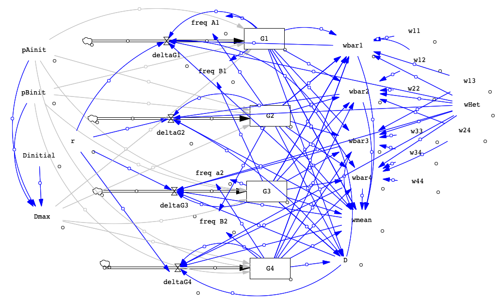

BIOL 322 Lab 6. Gametic Disequilibrium
Angela Roles
Spring 2026
biol322-lab6.RmdWhen you have completed the exercise below, submit your model and your lab write-up via the Google Drive Form. Responses due by the following week’s lab period.
During lab, we will work in groups. Here are the groups assigned for today’s exercise:
- Clara and Miles
- Natalie and Amy
- Ella and Emmy
- Savannah and Paige
- Bethany and Jordyn
- Charlie, Amanda, and Arc
Overview
Today we’ll build a two-locus model to allow us to explore the phenomenon of gametic disequilibrium, including how it is affected by physical linkage and by natural selection. Just like we did with drift, we’ll create a toggle to allow us to start out either in maximum Disequilibrium or not (that is, in equilibrium). Until now, we’ve tracked genotypes and also allele frequencies. However, the two-locus model has 9 possible genotypes so we are only going to track the four possible gamete types with our stocks. We will account for genotypes when modeling selection by specifying fitness values for each of the 9 genotypes. The inclusion of a spinner for r, the rate of recombination, will allow us to explore the effects of physical linkage. These parameters will then let us see how it’s possible to have gametic disequilibrium even when the loci are not physically linked (r = 0.5).
Because we are tracking gametotypes rather than genotypes in this model, we’ll have to start from scratch, though you should notice similarities to the models we built in earlier lab exercises.
Before we get started, let’s think about what it means for the population to be in maximum disequilibrium for the alleles at two loci (Alpha and Beta loci). We have two alleles for each locus with the following allele frequencies:
| Locus Alpha, alleles A and a | Locus Beta, alleles B and b |
| freq A = frequency of the A allele | freq B = frequency of the B allele |
| freq a = frequency of the a allele | freq b = frequency of the b allele |
Now, if we assume that loci are independently assorting, then we know the probability of having each combination of alleles in a gamete – it’s just the product of the two allele frequencies.
G1 = frequency of the AB gamete = freq A * freq B
G2 = frequency of
the Ab gamete = freq A * freq b
G3 = frequency of the aB gamete =
freq a * freq B
G4 = frequency of the ab gamete = freq a * freq b
Note that Vensim will not let us name the variables GAB, GAb, etc because it does not recognize capitalization. However, you can name them something like G1AB, G2Ab and it will retain the capitalization while being able to tell them apart.
If we imagine a population where freq A = 0.5 and freq B = 0.5, then we expect G1 = 0.5*0.5 = 0.25. And we’d also end up with 0.25 for the frequencies of G2, G3, and G4. That would be our prediction if the Alpha and Beta loci assort independently.
But now imagine that when we look at gametes, we observe that what we have is:
G1 = AB gamete = 0.5
G2 = Ab gamete = 0
G3 = aB gamete = 0
G4 = ab gamete = 0.5
We still have all the allele frequencies equal to 0.5 BUT the way alleles are paired in gametes is not random - we only get AB and ab. This would be maximum disequilibrium. The actual maximum disequilibrium values depend on the allele frequencies since you can’t have more AB gametes than you have A alleles, for example. Below, I give you the equations that will help us figure out the maximum for whatever starting conditions we choose.
In our model, we will set it up so we can choose to start with maximum disequilibrium OR start in gametic equilibrium.
Here’s a reference image of the completed model:

Build the two-locus model
Open a new model in VensimPLE. Save the new model as “disequilibrium.mdl”. Remember to change the time step to Year instead of Month. You can set the Final Time to 50.
For this model, we will be imagining two loci, the Alpha locus and the Beta locus, each with two alleles (A and a; B and b). Thus, we have diploid genotypes such as AABB, AaBB, aaBb, etc. And the possible gamete types are: AB, Ab, aB, ab.
We need to create 4 stocks, one for each gamete type. Call them “G1” (AB), “G2” (Ab) “G3” (aB), and “G4” (ab), following the convention from above and because Vensim doesn’t differentiate upper and lower case letters.
Next, create a flow for each stock, naming them “deltaG1”, “deltaG2”, “deltaG3”, “deltaG4”.
-
We need to specify initial values for the A and B alleles and also specify the recombination rate, r. So we need to create the variables: “pAinit”, “pBinit”, and “r”. Place them to the left of the flows.
- Now, let’s set up the values of these three variables. These are
ones that we’ll be changing when we test different conditions later, so
we’ll set an initial value, the Min, Max, and Inc. Click on Equation and
then click each variable and adjust settings as in the table.
Variable Equation Min Max Incr Description pAinit 1.0 0 1 0.001 Initial frequency of the A allele pBinit 1.0 0 1 0.001 Initial frequency of the B allele r 0.5 0 0.5 0.001 Rate of recombination
- Now, let’s set up the values of these three variables. These are
ones that we’ll be changing when we test different conditions later, so
we’ll set an initial value, the Min, Max, and Inc. Click on Equation and
then click each variable and adjust settings as in the table.
Let’s set up a couple of variables that let us turn disequilibrium on or off: Dinitial and Dmax. Dinitial will function like the toggledrift variable we used in an earlier model, it just determines whether we are starting with disequilibrium present (Dinitial=1) or not (Dinitial=0). We’ll change this between 0 and 1 when we are running simulations to see the effects of disequilibrium. Dmax is a variable that will figure out what’s the maximum amount we could be out of equilibrium when we allow Dinitial = 1? This variable will actually determine how gametes are arranged to create disequilibrium. Dmax will be an if-then-else statement since we’ll only want it to be greater than 0 if Dinitial = 1.’
-
Go ahead and create these two variables (Dinitial and Dmax). Be sure to then place arrows from Dinitial, pAinit, and pBinit to Dmax. Create these variables and then use Equation to set them up as follows:
Variable
Equation
Dinitial
0
Dmax
IF THEN ELSE( Dinitial = 0 , 0 , MIN( pAinit(1-pBinit) , pBinit(1-pAinit) ) )
-
Now we are ready to set up the initial values for our gametotype stocks! Note that in previous models we’ve been tracking the number of individuals with our stocks but in this model we’re just going to store the frequency of each gamete type, not the total number – hence we will not have a variable for population size. Place arrows as indicated in the table below. Then, select the Equation tool and set the Initial Value (NOT the equation) of each stock as in the following table. Make sure you place the arrows BEFORE typing in the equations!
Variable
Arrows from
Initial Value
G1
pAinit, pBinit, Dmax
( (pAinit * pBinit) + Dmax)
G2
pAinit, pBinit, Dmax
( (pAinit * (1 - pBinit) ) - Dmax)
G3
pAinit, pBinit, Dmax
( ( (1-pAinit) * pBinit) - Dmax)
G4
pAinit, pBinit, Dmax
( ( (1-pAinit) * (1-pBinit) ) + Dmax)
-
Next up, a few more variables that we usually want to keep track of - allele frequencies and then a variable for estimating disequilibrium at each time step (D). Make sure you put in the arrows before you set up the equations.
Variable
Description
Arrows from
Equation
freq A1
frequency of the A allele (or A1)
G1, G2
G1 + G2
freq a2
frequency of the a allele (or a2)
G3, G4
G3 + G4
freq B1
frequency of the B allele (or B1)
G1, G3
G1 + G3
freq b2
frequency of the b allele (or b2)
G2, G4
G2 + G4
-
To keep track of the amount of disequilibrium at each time step, create the variable D. Because this is something we’ll want to graph, we’ll set a min and max in addition to the equation.
Variable
Min
Max
Arrows from
Equation
D
0
0.5
G1, G2, G3, G3
(G1 * G4) - (G2 * G3)
-
Next up, we are going to add components that will let us cause selection to happen on genotypes in our simulation. Of course, we’ll start out with all genotypes having equal fitness as our null scenario but then later we can change the fitness values. Create the following fitnesses for each genotype with the settings as in the table.We’re going to name the variables for the fitnesses based on which gametes are involved (from 1 to 4). So for genotype AABB, that’s two G1 gametes, which we’ll encode as “w11”. Here is the list of fitness variables to make, place them left of the last column of variables you added. Use the Equation tool to set the min, max, incr, and equation.
Variable
Description
Equation
Min
Max
Incr
w11
fitness of AABB (the AB or G1/G1 gametes)
1
0
1
0.001
w22
fitness of AAbb (the Ab or G2/G2 gametes)
1
0
1
0.001
w33
fitness of aaBB (the aB or G3/G3 gametes)
1
0
1
0.001
w44
fitness of aabb (the ab or G4/G4 gametes)
1
0
1
0.001
w12
fitness of AABb (AB and Ab gametes, or G1/G2)
1
0
1
0.001
w13
fitness of AaBB (AB and aB gametes, or G1/G3)
1
0
1
0.001
w24
fitness of Aabb (Ab and ab gametes, or G2/G4)
1
0
1
0.001
w34
fitness of aaBb (aB and ab gametes, or G3/G4)
1
0
1
0.001
wHet
fitness of AaBb (either G1/G4 or G2/G3)
1
0
1
0.001
We’re getting there, just a few more variables to create before we can set the equations for our delta flows! Now we have the fitness values for diploid genotypes but when need to translate that into what happens with our gametes since we are keeping track of gametotypes (haploid), not genotypes (diploid). To do that, we’ll make some wbar (average fitness) variables, one for each gametotype. Then, you might remember we need to use a mean population fitness (wmean) to carry out selection so we’ll create that variable too.
-
Since we have 4 gametotypes, we will have 4 wbar variables, one for each type of gamete. These fitnesses will be the weighted average of the fitness of that gamete type when paired with each of the 4 gamete types (according to the frequency of that pairing). We’ll also set up wmean, which is similar to what we’ve used in past models. Following the table, set up these variables, place arrows, and then set the equations.
Variable
Description
Arrows from
Equation
wbar1
fitness of AB or G1 gametes
G1, G2, G3, G4, w11, w12, w13, wHet
G1w11 + G2w12 + G3w13 + G4wHet
wbar2
fitness of Ab or G2 gametes
G1, G2, G3, G4, w12, w22, wHet, w24
G1w12 + G2w22 + G3wHet + G4w24
wbar3
fitness of aB or G3 gametes
G1, G2, G3, G4, w13, wHet, w33, w34
G1w13 + G2wHet + G3w33 + G4w34
wbar4
fitness of ab or G4 gametes
G1, G2, G3, G4, wHet, w24, w34, w44
G1wHet + G2w24 + G3w34 + G4w44
wmean
mean fitness of the population, as we used before
G1, G2, G3, G4, wbar1, wbar2, wbar3, wbar4
G1wbar1 + G2wbar2 + G3wbar3 + G4wbar4
-
Phew! Those are all the components that we need to create. Now we can set up our deltaG1, deltaG2, deltaG3, and deltaG4 flows! Remember, these are the variables that determine how the frequency of each gametotype will change in the next generation, including selection (so using those wbar and wmean values). Connect arrows as indicated and then you can enter the equations.
Variable
Arrows from
Equation
deltaG1
G1, wbar1, r, wHet, D, wmean
(G1wbar1 – rwHet*D)/wmean - G1
deltaG2
G2, wbar2, r, wHet, D, wmean
(G2wbar2 + rwHet*D)/wmean - G2
deltaG3
G3, wbar3, r, wHet, D, wmean
(G3wbar3 + rwHet*D)/wmean - G3
deltaG4
G4, wbar4, r, wHet, D, wmean
(G4wbar4 – rwHet*D)/wmean - G4
-
Finally, we are ready to test out our model and then see what we can learn from it. Before we proceed though, let’s take a second to think about what we’re going to want to graph here. For one, we will want to know what is happening with each gamete type, so we’ll definitely want to graph G1, G2, G3, G4 – probably together on a single graph. Then we’ll want to look at allele frequencies, as we usually do, but we probably want to graph A and a separate from B and b. Finally, because linkage is an element of this model, we’ll want to graph D (disequilibrium) so we can see how far from equilibrium we are in terms of gametotype frequencies. Probably useful to graph D with Dmax (knowing that 0 is the minimum value). Note that Dmax will be a set value unless selection is happening in the model (because Dmax only changes when allele frequencies change).
Test your model
Our first test is just to click Simulate, to run the model with all the starting conditions that we set up (which are freqA1 = 1, freqB1 = 1, so only A and B alleles, thus only AB gametes). If you Graph G1, G2, G3, and G4, you should see that G1 is at 1.0, flat line, and everything else is flat at 0.
If any values are different from this, there are mistakes somewhere in your model! Start by checking the equations for the gametotypes then check the equations for the flows next. Be careful of operators (*, +, or -) and parentheses.
Now let’s click Simulation Control and try out a different no evolution scenario. Set the following variable values before naming your run and clicking Save. Then click Simulate.
| Dinitial | r | pAinit | pBinit | Fitnesses | Description |
| 0 | 0.5 | 0.6 | 0.3 | all 1.0 | No selection, unlinked, D=0 |
Now graph G1-4. Then graph freqA1 and freqB1. You may want to remove all the lines from the current run. You can do that manually or use the Control Panel. Given that we have no selection and no disequilibrium to start, all the lines on the graph should remain flat. No change in allele or gamete type frequencies should occur. But notice that we do see the different gametes are present at different frequencies. You should be able to see how the gamete frequencies relate to the allele frequencies (for example, G1 = pA x pB).
For a final check, let’s see what happens when we start the population off with maximum disequilibrium (for these allele frequencies) – just run the same conditions as above except change Dinitial to 1.
| Dinitial | r | pAinit | pBinit | Fitnesses | Description |
| 1 | 0.5 | 0.6 | 0.3 | all 1.0 | No selection, unlinked, D=0 |
You should see that the population starts out of equilibrium and then the gamete frequencies reach the same equilibrium as in the previous run. What does this tell us about the effect of adding an association between alleles at different loci? Make sure to also look at the graph for D.
Lab Write-Up
Questions
-
Physical linkage. Let’s explore what happens when we allow loci to be physically linked (r < 0.5). Use your conditions from above as a baseline and compare when we change the value of r. Make sure you compare between Dinitial=0 and Dinitial=1 too (starting with alleles randomly associated versus non-randomly associated). You will want a graph of G1-4 and a second graph of freqA1 and freqB1.
Trial
Dinitial
r
pAinit
pBinit
Fitnesses
Description
1a
0 then 1
0.5
0.6
0.3
all 1.0
No selection, unlinked, D=0
1b
0 then 1
0.1
0.6
0.3
all 1.0
No selection, unlinked, D=0
Do gametotypes reach the same values? Allele frequencies don’t change (they won’t unless we impose selection). Look at the disequilibrium (D) graph: what’s different when r = 0.5 versus 0.1? Why does this happen? Summarize the effect of physical linkage on the system in the absence of selection. -
Genetic hitchhiking. In this scenario, selection occurs at the B locus (favoring bb) but not the A locus. We’ll run with and without physical linkage and with/without initial disequlibrium:
Trial
Dinitial
r
pAinit
pBinit
Fitnesses
Description
2a
0 then 1
0.5
0.5
0.5
1 for bb (w22, w44, w24), 0.8 for others
unlinked
2b
0 then 1
0.1
0.5
0.5
1 for bb (w22, w44, w24), 0.8 for others
linked
Here is the matrix of fitness values (helps if you organize them in this shape in the model):AA
Aa
aa
BB
w11 = 0.8
w13 = 0.8
w33 = 0.8
Bb
w12 = 0.8
wHet = 0.8
w34 = 0.8
bb
w22 = 1
w24 = 1
w44 = 1
Compare the run with r = 0.5 and r = 0.1. Pay particular attention to the allele frequency graphs and the disequilibrium graph (graph of D). What’s the effect of having selection on one of the two loci when you start in equilibrium versus not? What about when loci are linked versus not? Describe what happens in genetic hitchhiking, referring to what’s visible in your graphs. -
Epistasis. So far we’ve considered selection on a single locus affecting a linked neutral locus. What if fitness depends on the genotype at BOTH loci – if we have epistasis instead of additivity? For this scenario, we’ll set up fitness relationships with dominance of A at the Alpha locus and the relationship at the Beta locus depends on your genotype at the Alpha locus, yielding either overdominance (if aa for the Alpha locus) or underdominance (if you have at least one A allele). Here are the fitness values for this scenario:
AA
Aa
aa
BB
w11 = 0.95
w13 = 0.95
w33 = 0.85
Bb
w12 = 0.80
wHet = 0.80
w34 = 1.0
bb
w22 = 0.85
w24 = 0.85
w44 = 0.90
As you can see, genotype aaBb has the highest fitness and AABb, AaBb have the lowest fitness. What do you think will happen to allele frequencies when we run this model for unlinked loci and starting in equilibrium? What about linked loci? And starting in disequilibrium?Trial
Dinitial
r
pAinit
pBinit
Fitnesses
Description
3a
0 then 1
0.5
0.5
0.5
as in above table
unlinked
3b
0 then 1
0.05
0.5
0.5
as in above table
loci linked
Summarize the effects of epistasis with and without linkage and disequilibrium. -
Synthesis. Review what you’ve seen in this lab in comparison to the labs we’ve explored in past weeks. How would you describe the effects of considering two loci instead of only one? Especially think about how multiple loci and physical linkage can interact with selection to influence how allele frequencies change. When you are finished with this lab, go outside, lay in the grass, and stare at the sky!! (Or do something equally relaxing, if you have time.)
Remember to submit your model and responses via the Google Drive Form.